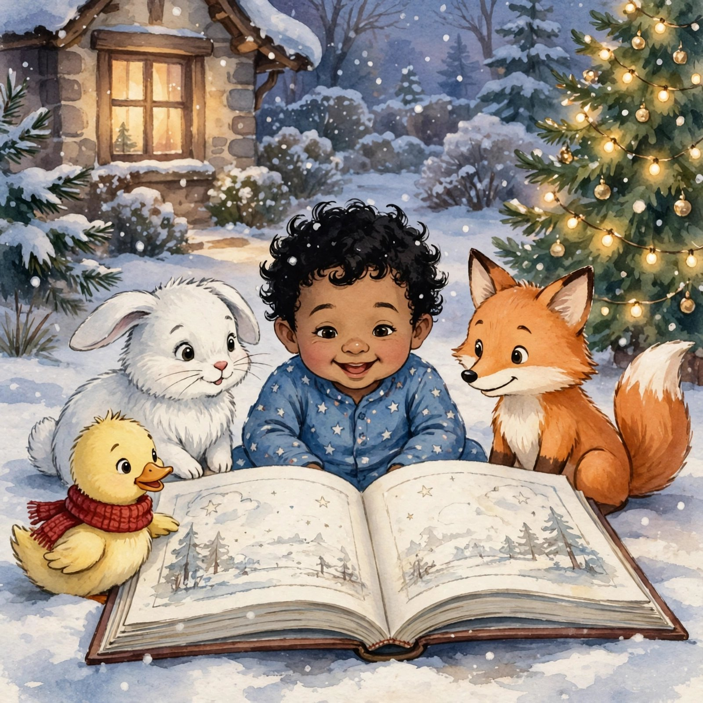
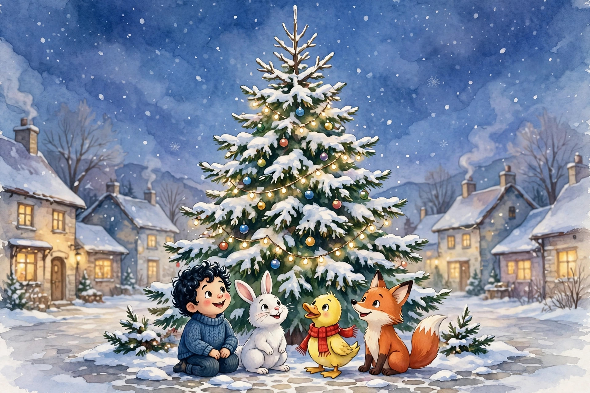

🗞️
Le Petit Journal d'Adam
Le journal gratuit des enfants de 0 à 6 ans : une histoire à suivre, des jeux, un coloriage, un concours et les histoires de nos petits lecteurs. À lire en ligne ou à imprimer pour la fin de semaine !

📅 À lire en ligne ou à imprimer
📖 Le dernier numéro
Nº 1 — Vendredi 20 novembre 2026
⭐ La petite étoile perdue (chapitre 1) · 🎲 Jeux de l'hiver · 🎨 Grand coloriage de Noël · 🏆 Concours de dessin
🗂️ Les anciens numéros
- 🗞️ Nº 1 — 20 novembre 2026 : La petite étoile perdue, chapitre 1 · ⬇ PDF
Tous les numéros parus sont conservés ici.
⭐ Crée ton étoile et offre-la !

Choisis un décor d'hiver avec Adam et ses amis, la couleur de ton étoile et un petit message — puis télécharge ta carte-étoile ou partage-la avec quelqu'un que tu aimes. Gratuit, et tout se fait sur ton appareil.
💡 Comment ça marche ?
1️⃣
Lis et joueDécouvre l'histoire à suivre, les jeux et le coloriage.
2️⃣
ImprimeTélécharge le PDF et imprime les pages d'activités pour la maison ou la classe.
3️⃣
ParticipeEnvoie ton dessin au concours ou ton histoire : les créations choisies pourront paraître dans le journal !
🍎 Éducatrices et enseignants : le journal est libre d'utilisation en groupe et en classe — histoire à suivre le vendredi, coloriage et jeux pour vos petits groupes. Découvrez aussi notre Espace éducateurs & CPE.
✍️ À toi d'écrire !
Ton enfant a inventé une histoire ? Envoie-la-nous avec l'aide d'un parent : chaque histoire est lue avec soin par notre équipe, et les histoires choisies pourront paraître dans le journal, avec le prénom et l'âge du petit auteur.
💌 Si tu viens d'envoyer une histoire, merci ! Elle apparaîtra peut-être dans le journal après lecture par notre équipe.